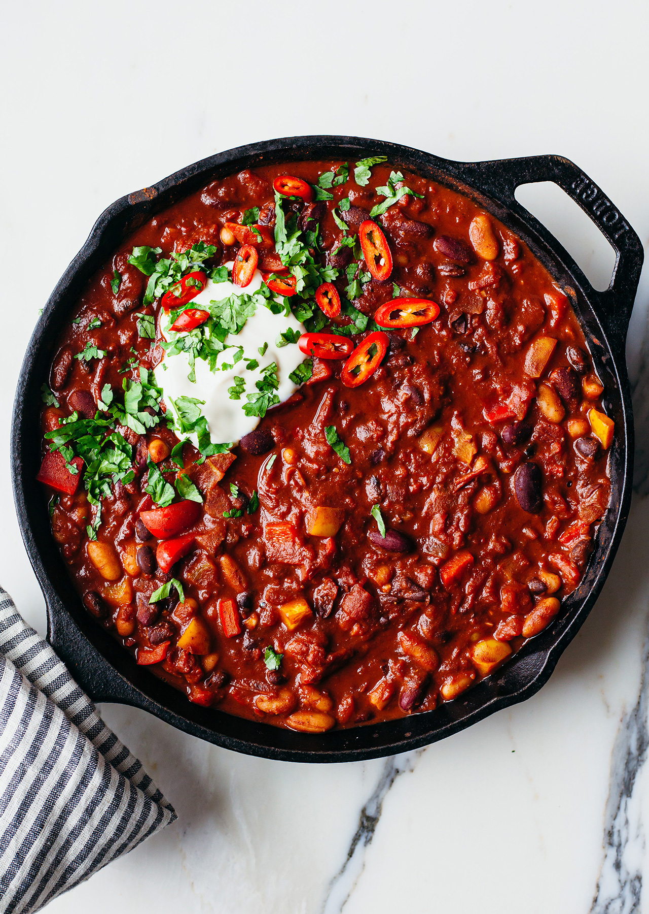

Chili Recipe

Eat.
Ingredients
- 1 green bell pepper, diced
- 1 large onion, diced
- 2 jalapeno peppers, chopped
- 1 cup rinsed, uncooked white rice
- 1 1/2 cups water
- 2 (15oz) cans of crushed tomatoes
- 1 (15oz) can of black beans
- 1 (15oz) can of pinto beans
- 1 (15oz) can of corn
- 1/4 chili powder
- 1 1/2 tablespoons salt
- 1/2 teaspoon cumin
- 2 cloves garlic, minced
- 1/2 teaspoon ground pepper
Directions
- Saute onion, bell pepper, and jalapeno pepper in oil over medium-high heat for about 3 minutes. Add chili powder, salt, cumin, and garlic. Cook, stirring occasionally, for about 10 minutes, making sure chili powder does not burn.
- Stir tomatoes, beans, water, and rice into the pot. Bring to a boil. Reduce heat to low, cover, and simmer until rice is fully cooked, about 20 minutes. Check every 10 to 15 minutes if extra water is needed; add 1/4 cup at a time.
- Stir corn and pepper into the chili and cook until heated through, about 5 minutes. Serve.